Toner og intervaller: musikkens byggesteiner
Bevart NB/EN

English diagram
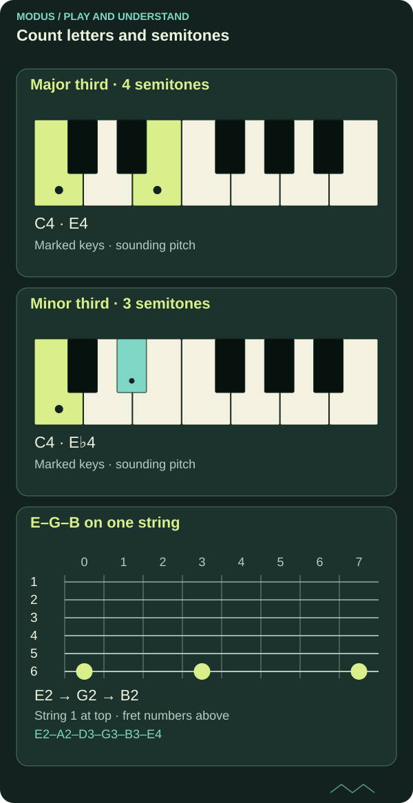
Les diagrammet som tekst
- Stor ters · 4 halvtoner: C4 → E4
- Liten ters · 3 halvtoner: C4 → E♭4
- E–G–B på én streng: streng 6, bånd 0: E2; streng 6, bånd 3: G2; streng 6, bånd 7: B2
Dur og moll: en tone gjør forskjellen
Bevart NB/EN
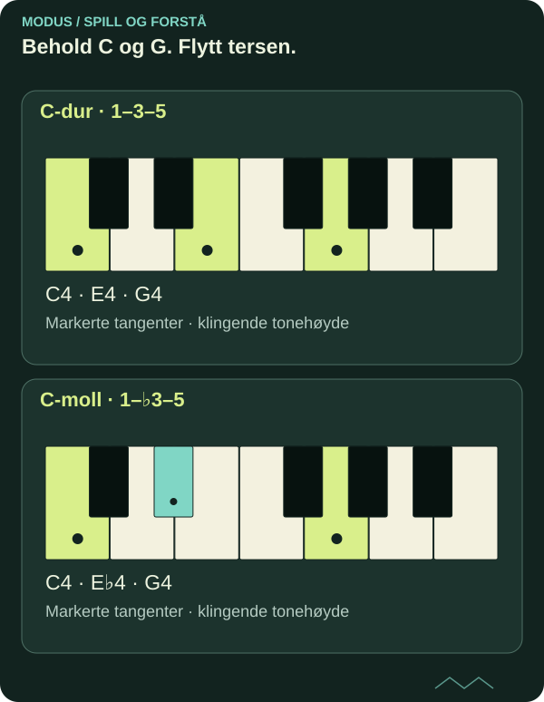
English diagram
Les diagrammet som tekst
- C-dur · 1–3–5: C4 → E4 → G4
- C-moll · 1–♭3–5: C4 → E♭4 → G4
Kvintsirkelen: et kart over toneartenes slektskap
Bevart NB/EN
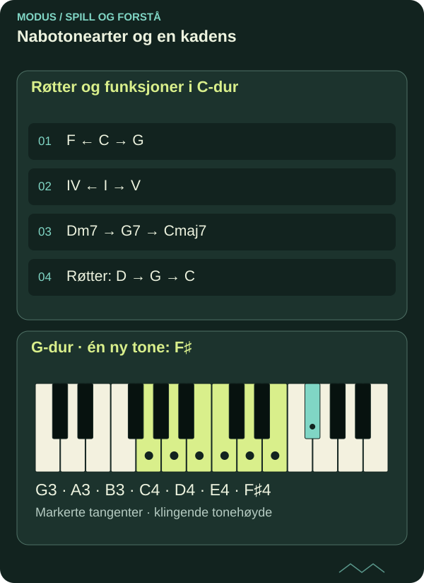
English diagram
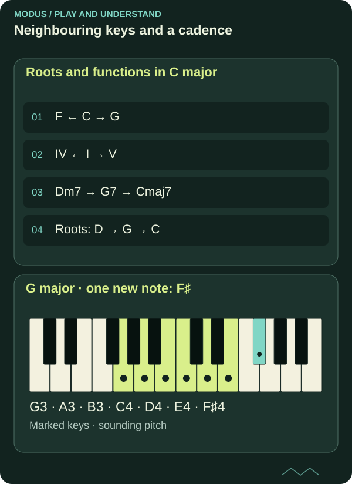
Les diagrammet som tekst
- Røtter og funksjoner i C-dur: F ← C → G; IV ← I → V; Dm7 → G7 → Cmaj7; Røtter: D → G → C
- G-dur · én ny tone: F♯: G3 → A3 → B3 → C4 → D4 → E4 → F♯4
Fra skala til din første improvisasjon
Bevart NB/EN
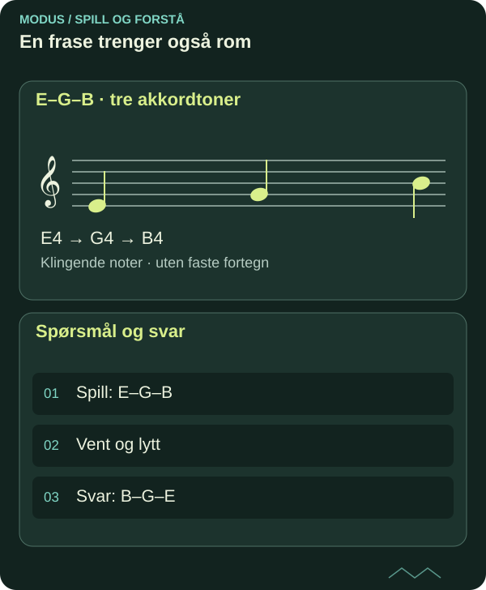
English diagram

Les diagrammet som tekst
- E–G–B · tre akkordtoner: E4 → G4 → B4
- Spørsmål og svar: Spill: E–G–B; Vent og lytt; Svar: B–G–E
Moduser: sentrum er viktigere enn starttonen
Bevart NB/EN
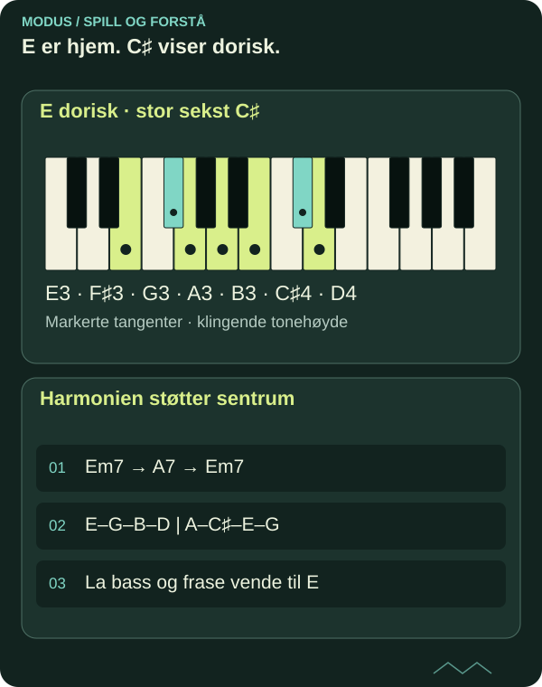
English diagram

Les diagrammet som tekst
- E dorisk · stor sekst C♯: E3 → F♯3 → G3 → A3 → B3 → C♯4 → D4
- Harmonien støtter sentrum: Em7 → A7 → Em7; E–G–B–D | A–C♯–E–G; La bass og frase vende til E
Kirketonearter: ett tonesystem, sju musikalske uttrykk
Bevart NB/EN
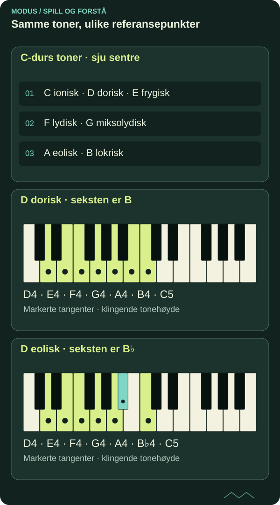
English diagram
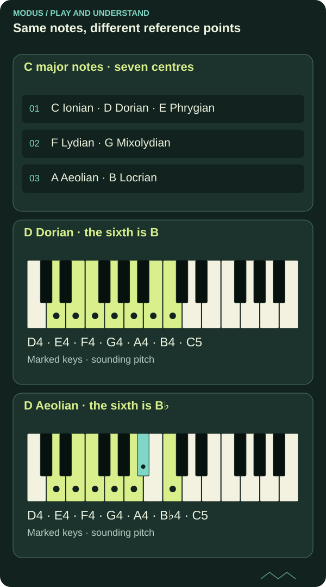
Les diagrammet som tekst
- C-durs toner · sju sentre: C ionisk · D dorisk · E frygisk; F lydisk · G miksolydisk; A eolisk · B lokrisk
- D dorisk · seksten er B: D4 → E4 → F4 → G4 → A4 → B4 → C5
- D eolisk · seksten er B♭: D4 → E4 → F4 → G4 → A4 → B♭4 → C5
Romertall i musikk: forstå akkordene bak tallene
Bevart NB/EN
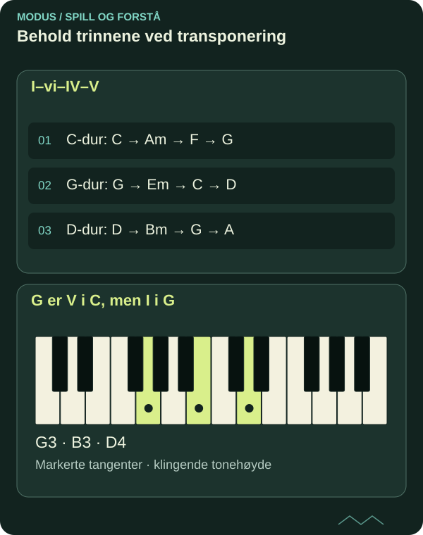
English diagram
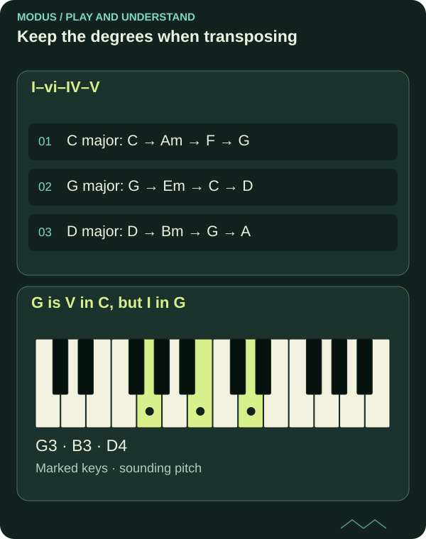
Les diagrammet som tekst
- I–vi–IV–V: C-dur: C → Am → F → G; G-dur: G → Em → C → D; D-dur: D → Bm → G → A
- G er V i C, men I i G: G3 → B3 → D4
ii–V–I: hvorfor akkorder vil hjem
Bevart NB/EN
English diagram
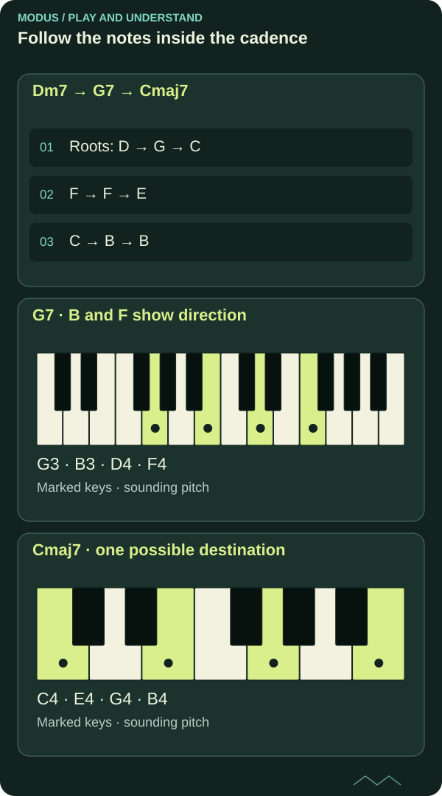
Les diagrammet som tekst
- Dm7 → G7 → Cmaj7: Røtter: D → G → C; F → F → E; C → B → B
- G7 · B og F viser retningen: G3 → B3 → D4 → F4
- Cmaj7 · en mulig målklang: C4 → E4 → G4 → B4
Treklanger: fra grunntone til akkordens tre toner
Bevart NB/EN
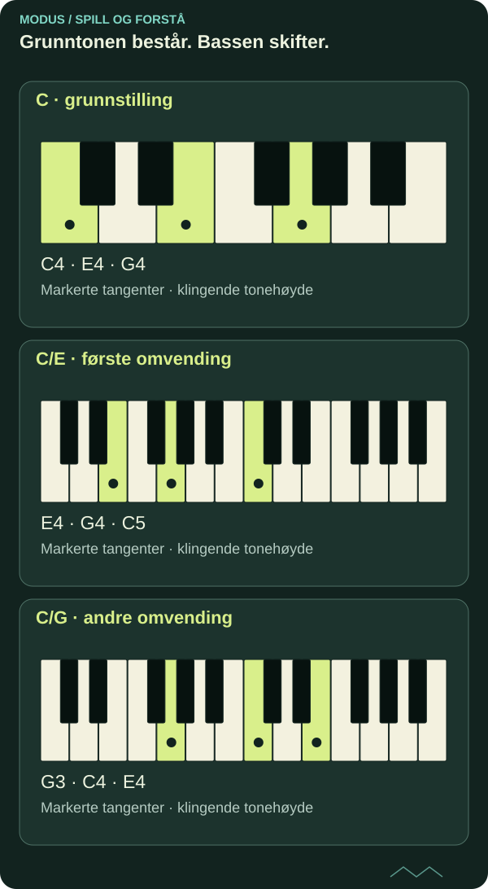
English diagram
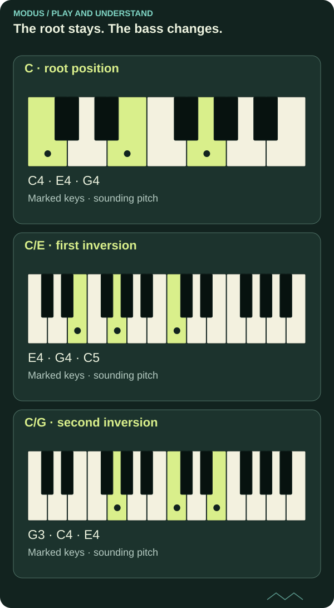
Les diagrammet som tekst
- C · grunnstilling: C4 → E4 → G4
- C/E · første omvending: E4 → G4 → C5
- C/G · andre omvending: G3 → C4 → E4
Septimakkorder: mer farge, samme grunnmur
Bevart NB/EN
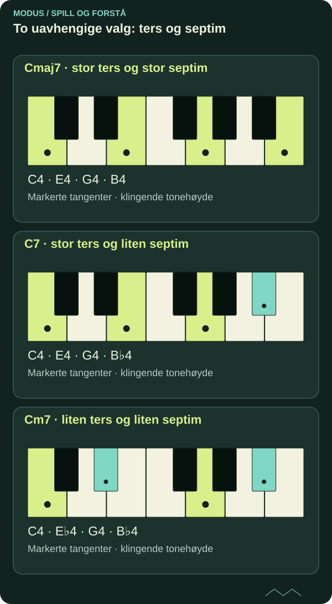
English diagram
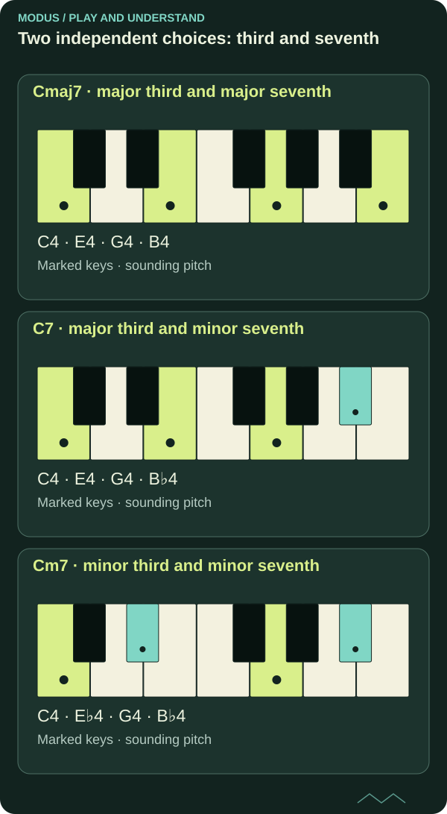
Les diagrammet som tekst
- Cmaj7 · stor ters og stor septim: C4 → E4 → G4 → B4
- C7 · stor ters og liten septim: C4 → E4 → G4 → B♭4
- Cm7 · liten ters og liten septim: C4 → E♭4 → G4 → B♭4
Harmonisk moll og frygisk dominant
Bevart NB/EN
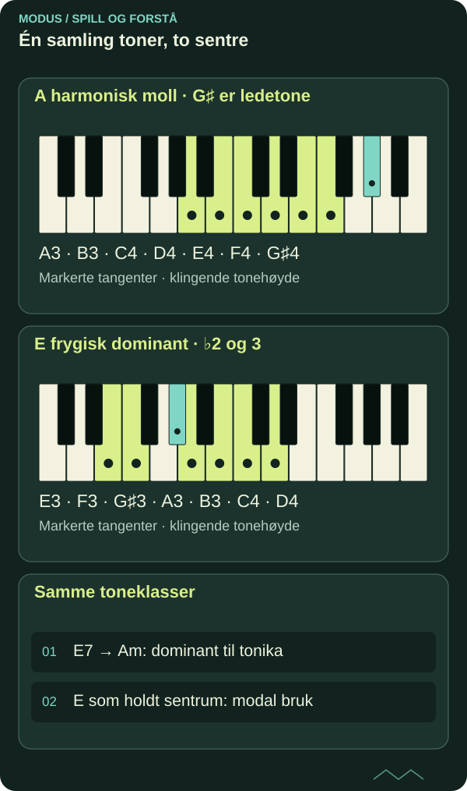
English diagram
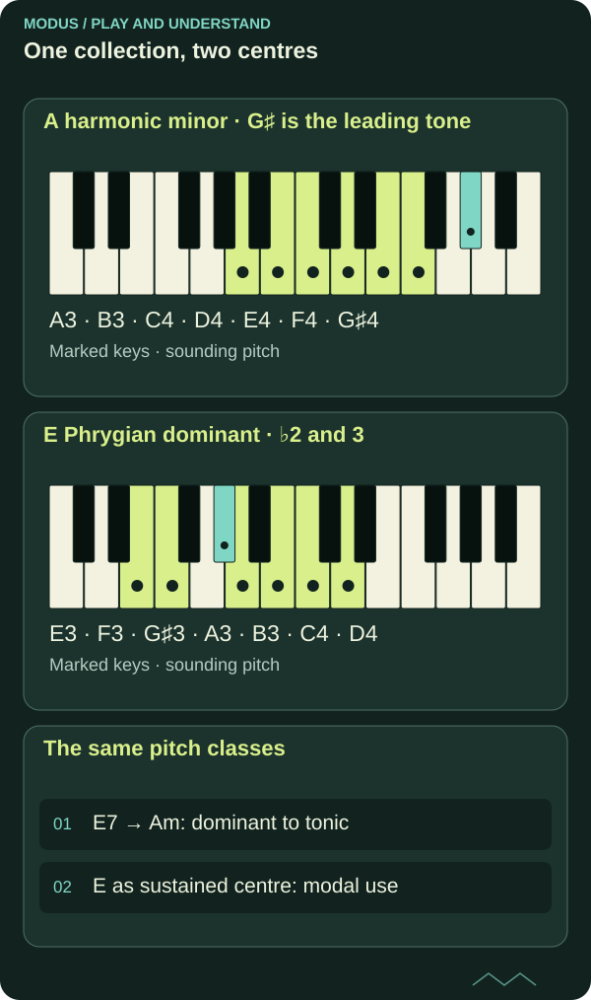
Les diagrammet som tekst
- A harmonisk moll · G♯ er ledetone: A3 → B3 → C4 → D4 → E4 → F4 → G♯4
- E frygisk dominant · ♭2 og 3: E3 → F3 → G♯3 → A3 → B3 → C4 → D4
- Samme toneklasser: E7 → Am: dominant til tonika; E som holdt sentrum: modal bruk
Stemmeføring: den korteste veien mellom akkorder
Bevart NB/EN
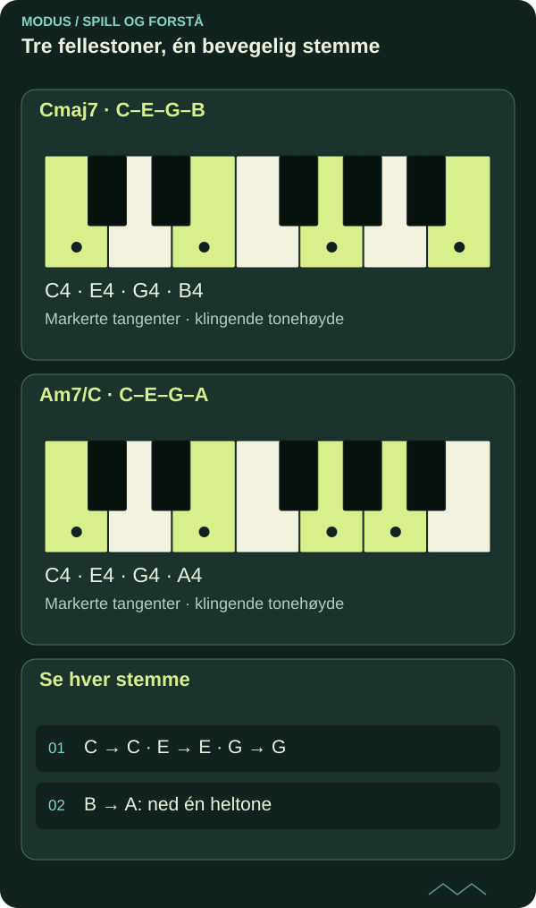
English diagram

Les diagrammet som tekst
- Cmaj7 · C–E–G–B: C4 → E4 → G4 → B4
- Am7/C · C–E–G–A: C4 → E4 → G4 → A4
- Se hver stemme: C → C · E → E · G → G; B → A: ned én heltone
Rytme i 7/8: grupper som føles naturlige
Bevart NB/EN
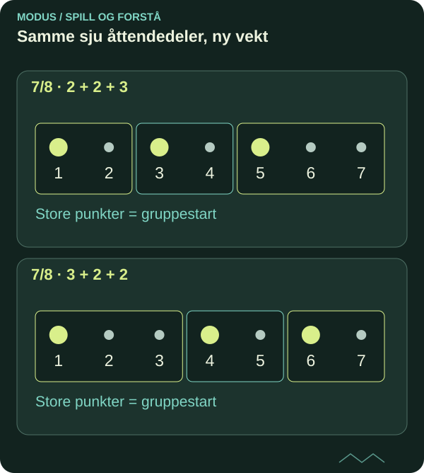
English diagram

Les diagrammet som tekst
- 7/8 · 2 + 2 + 3: 2+2+3 åttendedeler; aksent på 1, 3, 5
- 7/8 · 3 + 2 + 2: 3+2+2 åttendedeler; aksent på 1, 4, 6
Bygg akkordene i en toneart
Bevart NB/EN
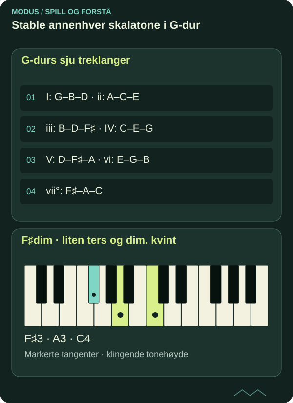
English diagram
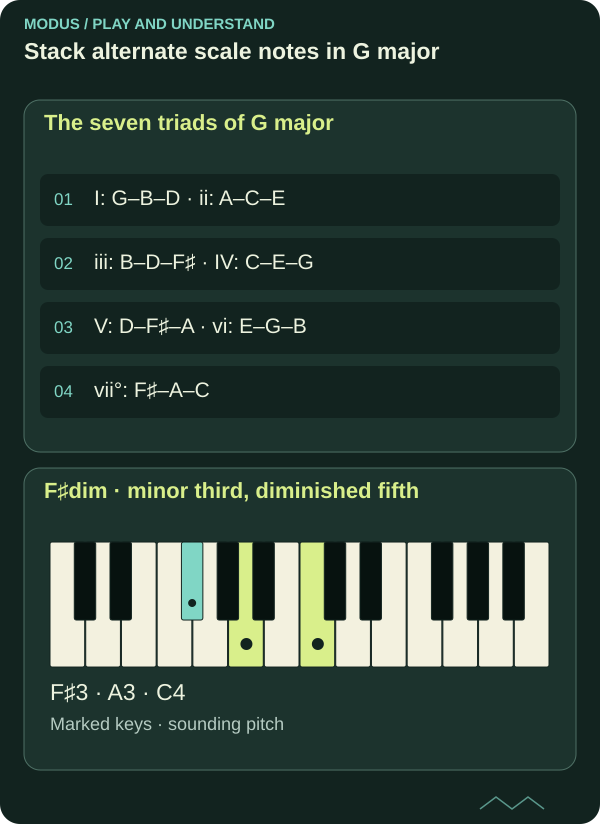
Les diagrammet som tekst
- G-durs sju treklanger: I: G–B–D · ii: A–C–E; iii: B–D–F♯ · IV: C–E–G; V: D–F♯–A · vi: E–G–B; vii°: F♯–A–C
- F♯dim · liten ters og dim. kvint: F♯3 → A3 → C4
Ett skalakart, nye måltoner
Bevart NB/EN
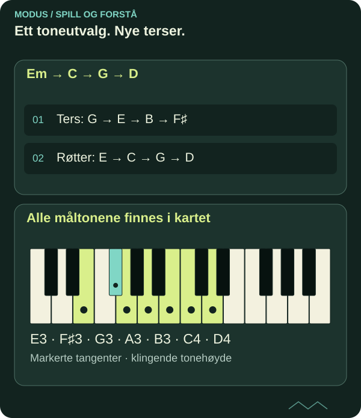
English diagram
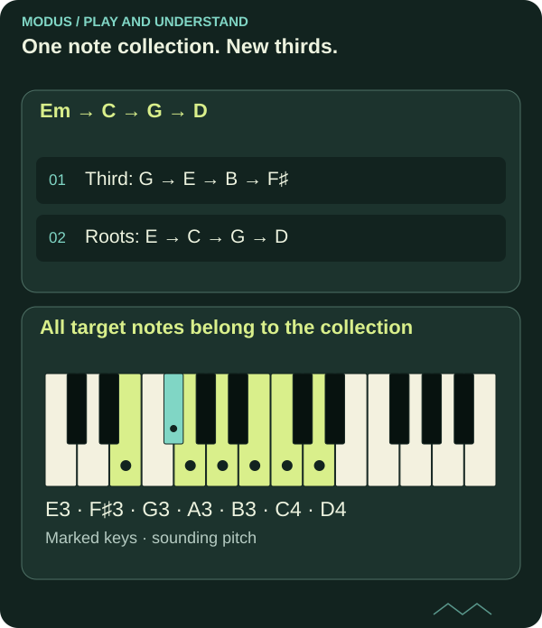
Les diagrammet som tekst
- Em → C → G → D: Ters: G → E → B → F♯; Røtter: E → C → G → D
- Alle måltonene finnes i kartet: E3 → F♯3 → G3 → A3 → B3 → C4 → D4
Dorisk og eolisk: samme grunntone, ny farge
Bevart NB/EN
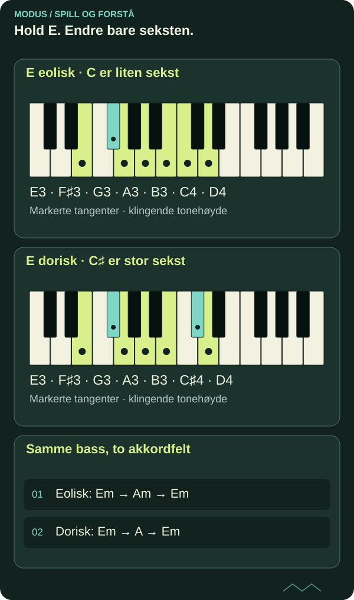
English diagram

Les diagrammet som tekst
- E eolisk · C er liten sekst: E3 → F♯3 → G3 → A3 → B3 → C4 → D4
- E dorisk · C♯ er stor sekst: E3 → F♯3 → G3 → A3 → B3 → C♯4 → D4
- Samme bass, to akkordfelt: Eolisk: Em → Am → Em; Dorisk: Em → A → Em
Intervallomvendinger: hør samme toner fra en ny side
Generisk bilde erstattet lokalt

English diagram · private source only
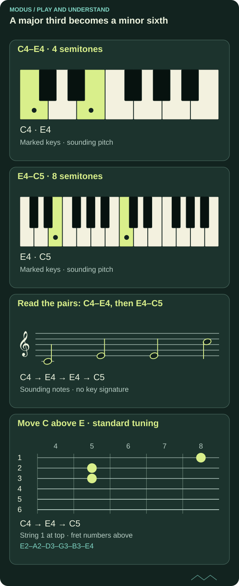
Les diagrammet som tekst
- C4–E4 · 4 halvtoner: C4 → E4
- E4–C5 · 8 halvtoner: E4 → C5
- Les parene: C4–E4, så E4–C5: C4 → E4 → E4 → C5
- Flytt C over E · standard stemming: streng 3, bånd 5: C4; streng 2, bånd 5: E4; streng 1, bånd 8: C5
Kadens og tonale funksjoner: bygg en tydelig avslutning
Generisk bilde erstattet lokalt
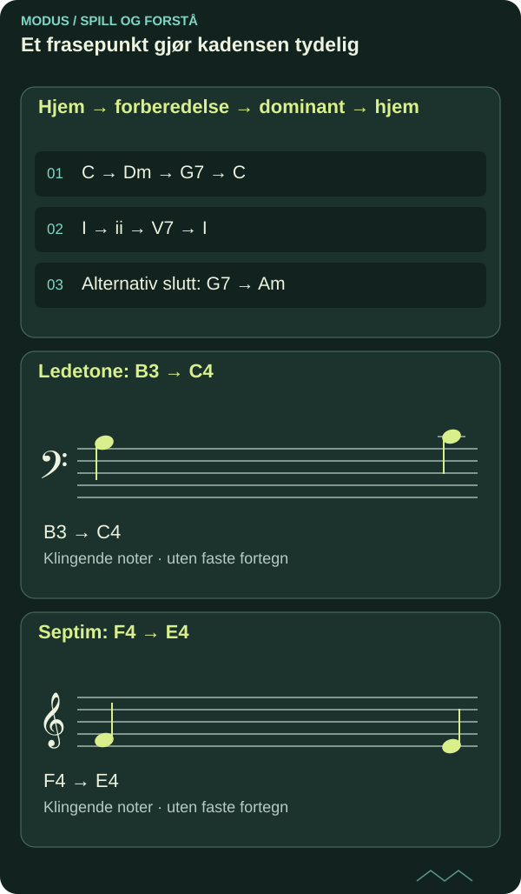
English diagram · private source only
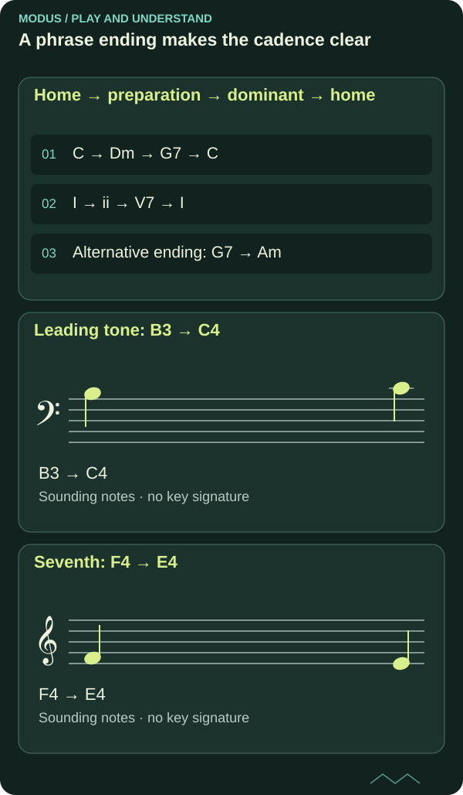
Les diagrammet som tekst
- Hjem → forberedelse → dominant → hjem: C → Dm → G7 → C; I → ii → V7 → I; Alternativ slutt: G7 → Am
- Ledetone: B3 → C4: B3 → C4
- Septim: F4 → E4: F4 → E4
Sekundærdominanter: gi en akkord sin egen opptakt
Generisk bilde erstattet lokalt
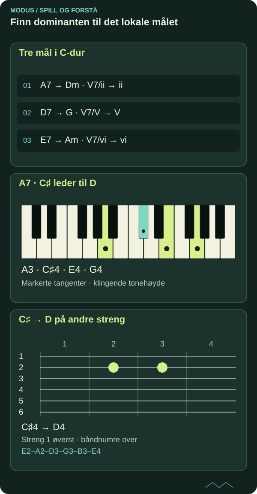
English diagram · private source only
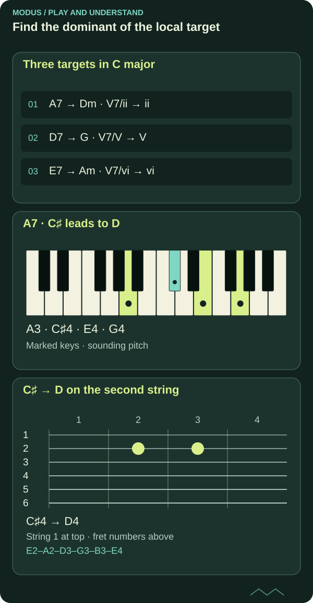
Les diagrammet som tekst
- Tre mål i C-dur: A7 → Dm · V7/ii → ii; D7 → G · V7/V → V; E7 → Am · V7/vi → vi
- A7 · C♯ leder til D: A3 → C♯4 → E4 → G4
- C♯ → D på andre streng: streng 2, bånd 2: C♯4; streng 2, bånd 3: D4
Akkordutvidelser: 9, 11 og 13 i spillbare klanger
Generisk bilde erstattet lokalt
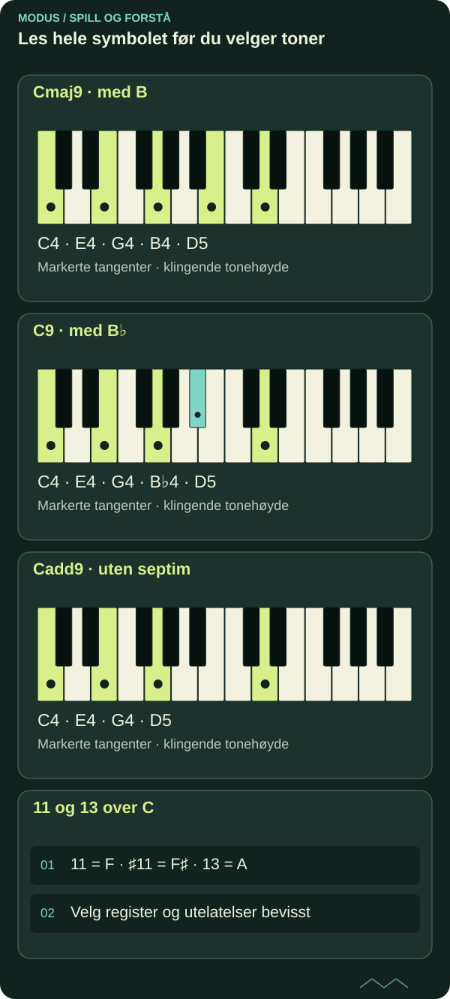
English diagram · private source only
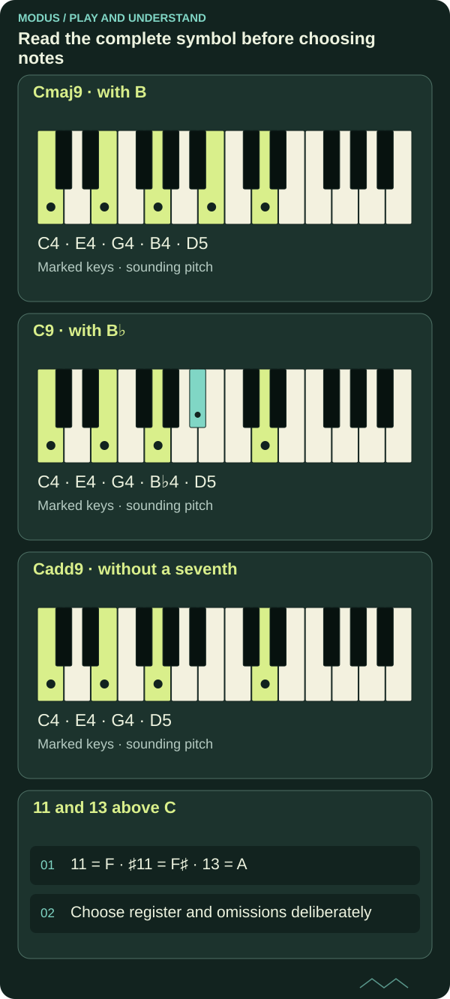
Les diagrammet som tekst
- Cmaj9 · med B: C4 → E4 → G4 → B4 → D5
- C9 · med B♭: C4 → E4 → G4 → B♭4 → D5
- Cadd9 · uten septim: C4 → E4 → G4 → D5
- 11 og 13 over C: 11 = F · ♯11 = F♯ · 13 = A; Velg register og utelatelser bevisst
Modal harmonikk i praksis: hold sentrum mens klangene skifter
Generisk bilde erstattet lokalt
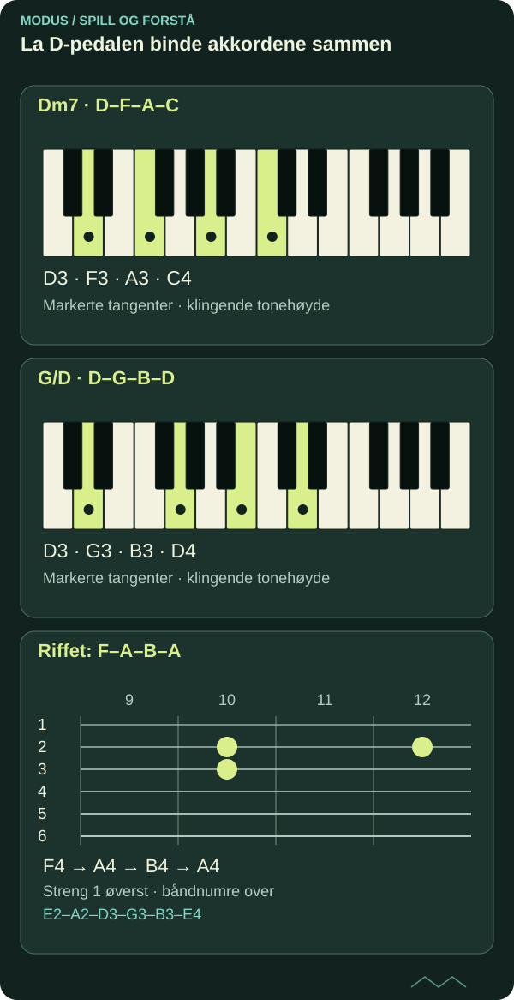
English diagram · private source only
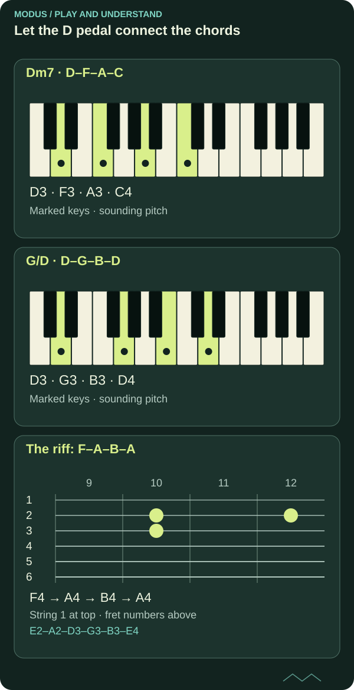
Les diagrammet som tekst
- Dm7 · D–F–A–C: D3 → F3 → A3 → C4
- G/D · D–G–B–D: D3 → G3 → B3 → D4
- Riffet: F–A–B–A: streng 3, bånd 10: F4; streng 2, bånd 10: A4; streng 2, bånd 12: B4; streng 2, bånd 10: A4
Tonikalisering og modulering: følg lokal og global tonalitet
Generisk bilde erstattet lokalt

English diagram · private source only
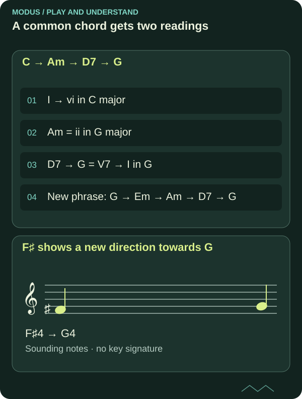
Les diagrammet som tekst
- C → Am → D7 → G: I → vi i C-dur; Am = ii i G-dur; D7 → G = V7 → I i G; Ny frase: G → Em → Am → D7 → G
- F♯ viser ny retning mot G: F♯4 → G4
Sekstkvartakkorder: hør hva bassen gjør
Generisk bilde erstattet lokalt
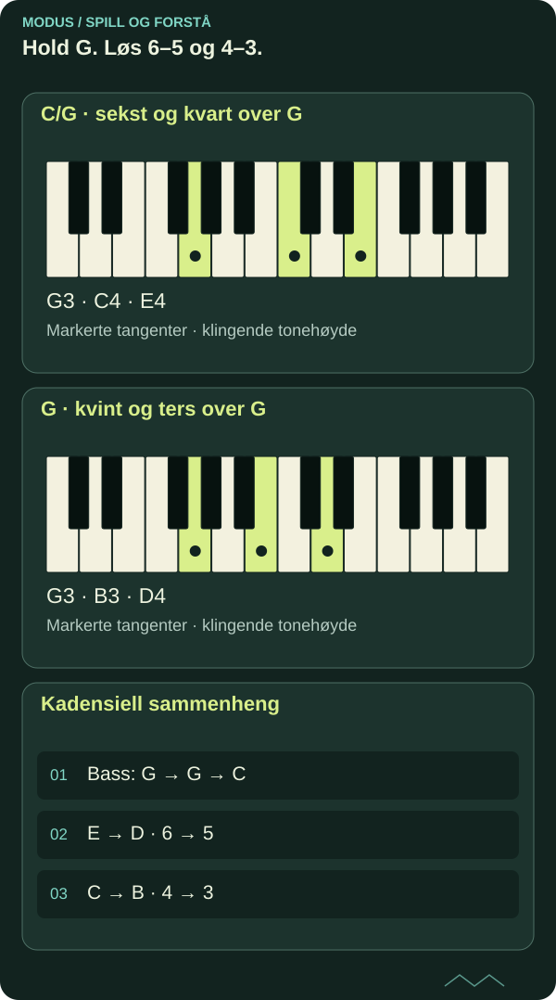
English diagram · private source only
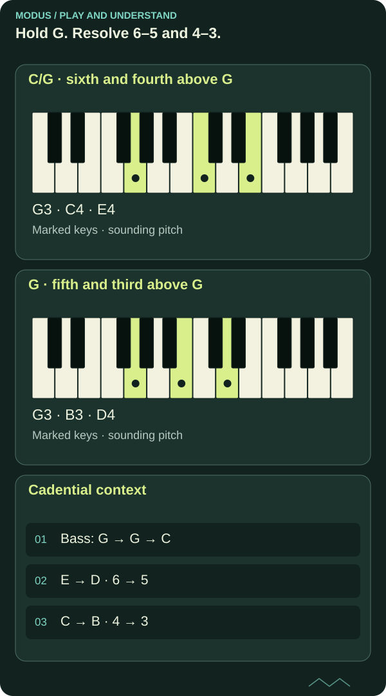
Les diagrammet som tekst
- C/G · sekst og kvart over G: G3 → C4 → E4
- G · kvint og ters over G: G3 → B3 → D4
- Kadensiell sammenheng: Bass: G → G → C; E → D · 6 → 5; C → B · 4 → 3
SATB: fordel stemmer og løs tendensene
Generisk bilde erstattet lokalt
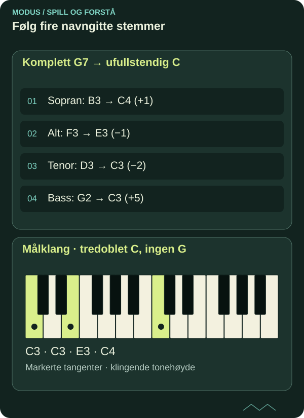
English diagram · private source only
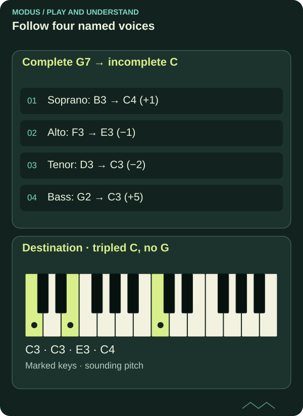
Les diagrammet som tekst
- Komplett G7 → ufullstendig C: Sopran: B3 → C4 (+1); Alt: F3 → E3 (−1); Tenor: D3 → C3 (−2); Bass: G2 → C3 (+5)
- Målklang · tredoblet C, ingen G: C3 → C3 → E3 → C4
Modal interchange og kromatiske medianter: lånt farge med retning
Generisk bilde erstattet lokalt
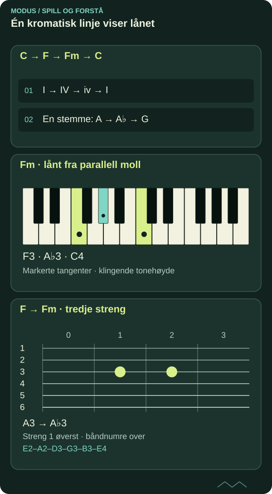
English diagram · private source only
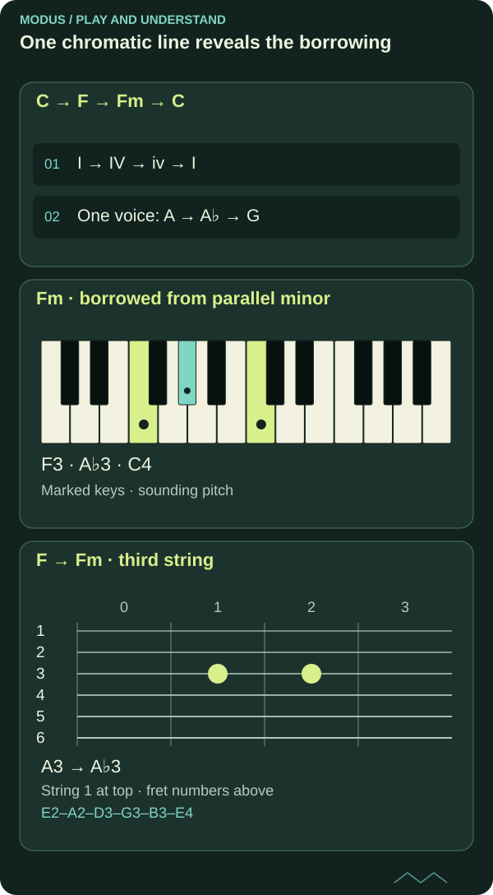
Les diagrammet som tekst
- C → F → Fm → C: I → IV → iv → I; En stemme: A → A♭ → G
- Fm · lånt fra parallell moll: F3 → A♭3 → C4
- F → Fm · tredje streng: streng 3, bånd 2: A3; streng 3, bånd 1: A♭3
Napolitansk akkord og forstørret sekst: to veier mot dominanten
Generisk bilde erstattet lokalt
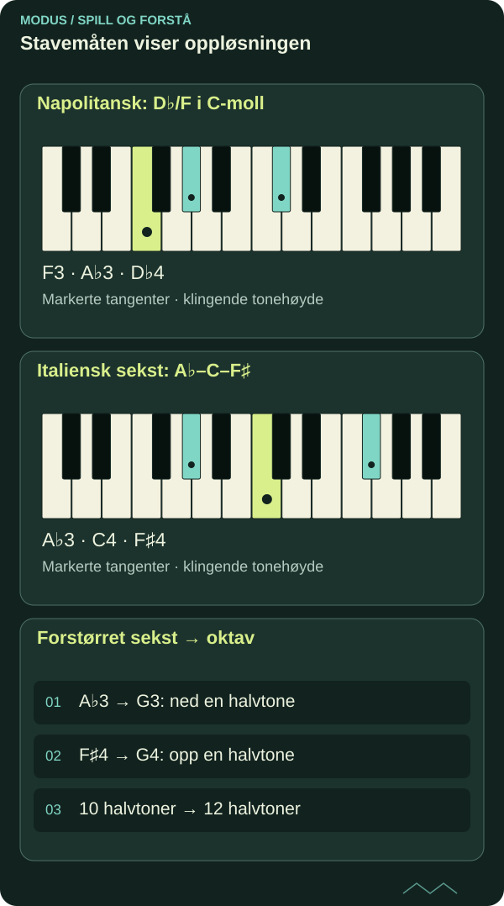
English diagram · private source only
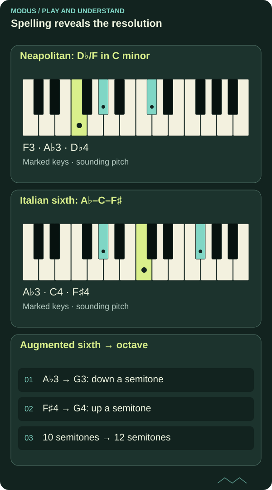
Les diagrammet som tekst
- Napolitansk: D♭/F i C-moll: F3 → A♭3 → D♭4
- Italiensk sekst: A♭–C–F♯: A♭3 → C4 → F♯4
- Forstørret sekst → oktav: A♭3 → G3: ned en halvtone; F♯4 → G4: opp en halvtone; 10 halvtoner → 12 halvtoner
Tritonussubstitusjon: samme guide-toner, ny bass
Generisk bilde erstattet lokalt
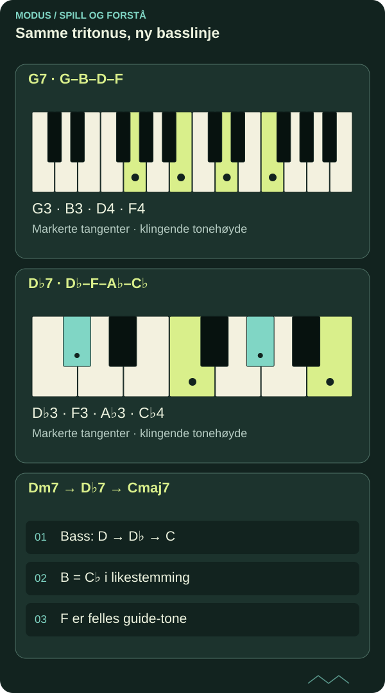
English diagram · private source only
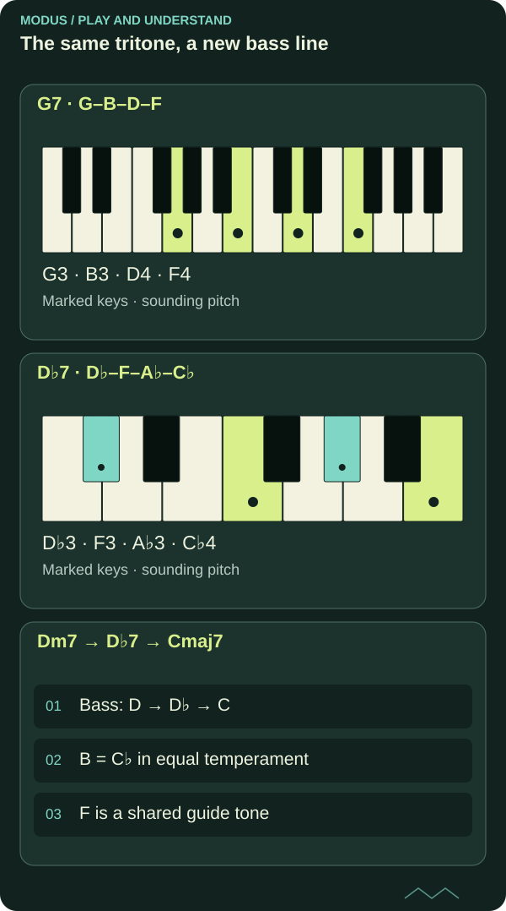
Les diagrammet som tekst
- G7 · G–B–D–F: G3 → B3 → D4 → F4
- D♭7 · D♭–F–A♭–C♭: D♭3 → F3 → A♭3 → C♭4
- Dm7 → D♭7 → Cmaj7: Bass: D → D♭ → C; B = C♭ i likestemming; F er felles guide-tone
Kontrapunkt: skriv to linjer som kan stå alene
Generisk bilde erstattet lokalt
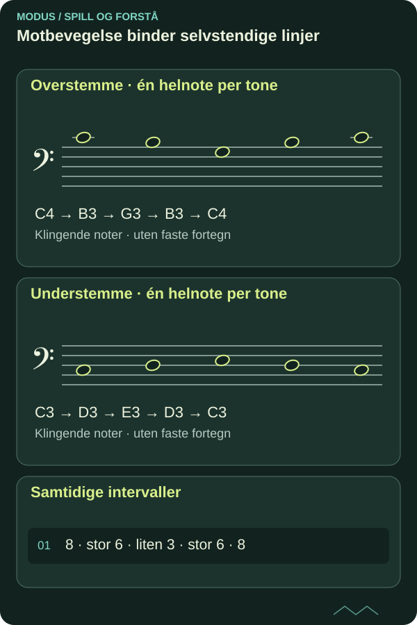
English diagram · private source only
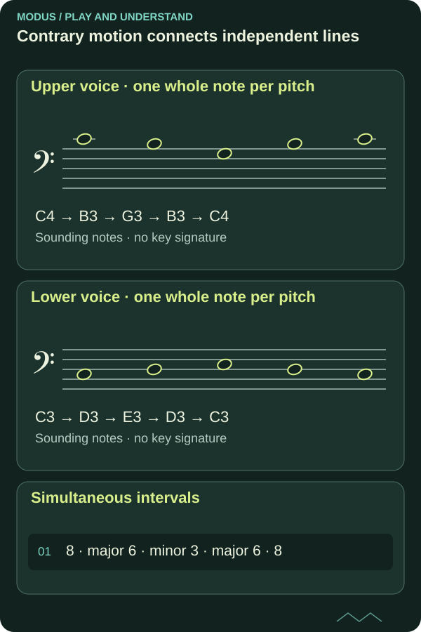
Les diagrammet som tekst
- Overstemme · én helnote per tone: C4 → B3 → G3 → B3 → C4
- Understemme · én helnote per tone: C3 → D3 → E3 → D3 → C3
- Samtidige intervaller: 8 · stor 6 · liten 3 · stor 6 · 8
Dissonansbehandling: gjennomgangstoner og forholdninger
Generisk bilde erstattet lokalt

English diagram · private source only
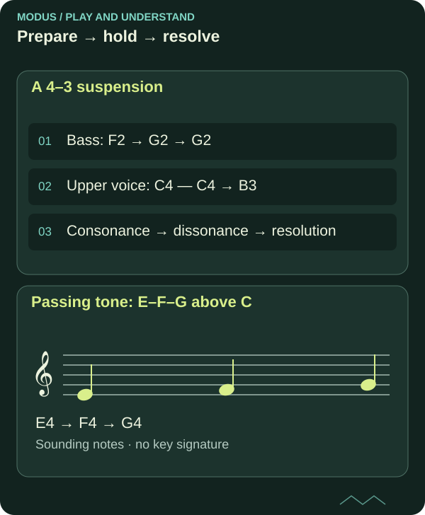
Les diagrammet som tekst
- En 4–3-forholdning: Bass: F2 → G2 → G2; Overstemme: C4 — C4 → B3; Konsonans → dissonans → oppløsning
- Gjennomgang: E–F–G over C: E4 → F4 → G4
Imitasjon, kanon og partimento: la en idé skape sats
Generisk bilde erstattet lokalt
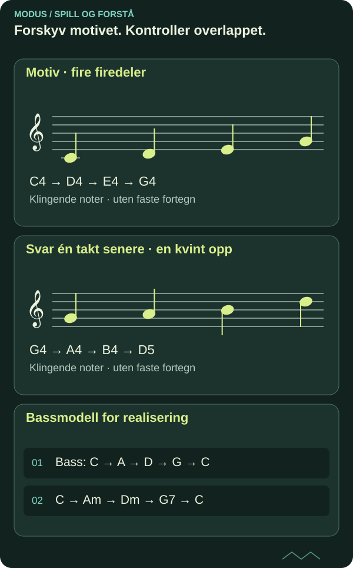
English diagram · private source only
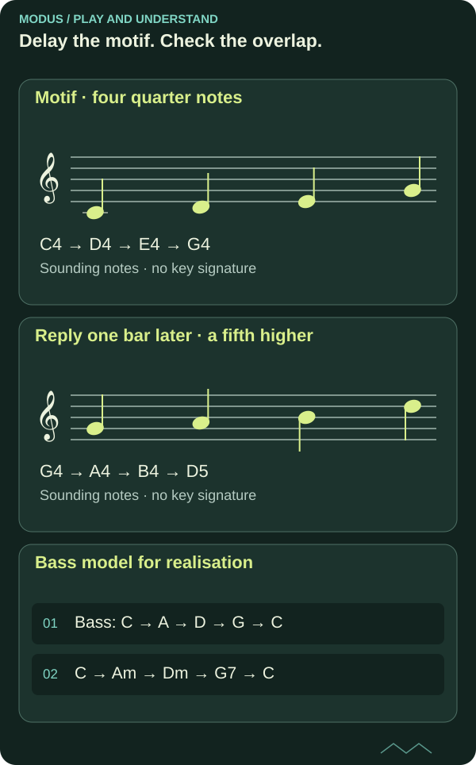
Les diagrammet som tekst
- Motiv · fire firedeler: C4 → D4 → E4 → G4
- Svar én takt senere · en kvint opp: G4 → A4 → B4 → D5
- Bassmodell for realisering: Bass: C → A → D → G → C; C → Am → Dm → G7 → C
Melodisk moll: fra tonesett til akkord–skala-valg
Generisk bilde erstattet lokalt
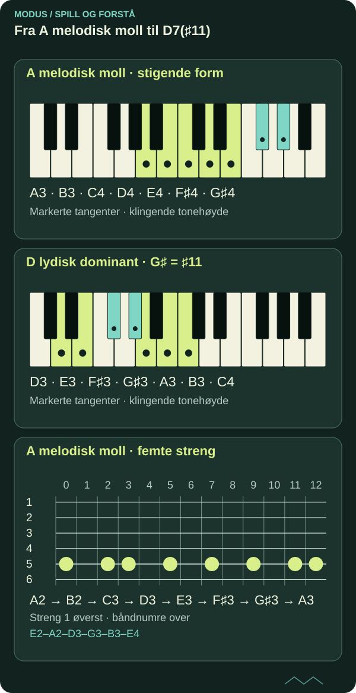
English diagram · private source only
Les diagrammet som tekst
- A melodisk moll · stigende form: A3 → B3 → C4 → D4 → E4 → F♯4 → G♯4
- D lydisk dominant · G♯ = ♯11: D3 → E3 → F♯3 → G♯3 → A3 → B3 → C4
- A melodisk moll · femte streng: streng 5, bånd 0: A2; streng 5, bånd 2: B2; streng 5, bånd 3: C3; streng 5, bånd 5: D3; streng 5, bånd 7: E3; streng 5, bånd 9: F♯3; streng 5, bånd 11: G♯3; streng 5, bånd 12: A3
Altered, heltoner og diminished: velg spenning med et mål
Generisk bilde erstattet lokalt
English diagram · private source only
Les diagrammet som tekst
- C altered · ♭9 ♯9 ♭5 ♭13: C4 → D♭4 → D♯4 → E4 → G♭4 → A♭4 → B♭4
- C heltoneskala · 2–2–2–2–2–2: C4 → D4 → E4 → F♯4 → G♯4 → B♭4
- C halv–hel · 1–2–1–2–1–2–1–2: C4 → D♭4 → E♭4 → E4 → F♯4 → G4 → A4 → B♭4
Kvartklanger, cluster og polykorder: organiser en tett overflate
Generisk bilde erstattet lokalt
English diagram · private source only
Les diagrammet som tekst
- Kvartstabel · 5 + 5 halvtoner: C4 → F4 → B♭4
- Cluster · 2 + 2 halvtoner: C4 → D4 → E4
- To treklanglag: Øvre lag: D–F♯–A; Nedre lag: C–E–G; Over C: 9 · ♯11 · 13
Motivisk utvikling: få mer musikk ut av fire toner
Generisk bilde erstattet lokalt
English diagram · private source only
Les diagrammet som tekst
- Original · etterfulgt av firedelspause: E4 → G4 → A4 → G4
- Transponert +2 halvtoner · samme rytme: F♯4 → A4 → B4 → A4
- En 24-takters plan: 1–8: presentasjon; 9–16: sekvens og fragment; 17–24: tilbakekomst i nytt register
Frase og periode: la kadensen forme musikken
Generisk bilde erstattet lokalt
English diagram · private source only
Les diagrammet som tekst
- Åtte takter · én akkord per takt: 1–4: C | F | Dm | G; Forledd: slutt på D over G; 5–8: C | F | G7 | C; Etterledd: slutt på C over C
- Tettere harmonisk rytme ved slutt: Takt 7: Dm → G7; Takt 8: C → C
Storform: rondo, sonatisk tenkning og gjennomkomponering
Generisk bilde erstattet lokalt
English diagram · private source only
Les diagrammet som tekst
- Rondo · A–B–A–C–A: A: gjenkjennelig omdreiningspunkt; B og C: kontrasterende episoder
- 64-takters originalmodell: 1–16: A · E-mollriff; 17–32: B · G som lokalt sentrum; 33–48: utvikling · fragmentering; 49–64: A′ · motiv i to stemmer
Komposisjon: fra første skisse til en begrunnet revisjon
Generisk bilde erstattet lokalt
English diagram · private source only
Les diagrammet som tekst
- En hel 24-takters skisse: 1–8: presentasjon; 9–16: kontrast; 17–24: tilbakekomst
- Et etterprøvbart revisjonsløp: A: behold førsteskissen; B: prøv ny opptakt ved takt 8; Lytt med likt tempo og nivå; Noter konkret hva som endret seg
Arrangering: gi hvert instrument en tydelig oppgave
Generisk bilde erstattet lokalt
English diagram · private source only
Les diagrammet som tekst
- Åtte takter · to per akkord: Em | Cmaj7 | Am7 | B7; Gitar: melodi · bass: grunntoner; Piano: ters/septim · trommer: puls
- B7 · D♯ og A er guide-toner: B2 → D♯3 → F♯3 → A3
Instrumentasjon: bygg balanse mellom metal og orkesterlag
Generisk bilde erstattet lokalt
English diagram · private source only
Les diagrammet som tekst
- Transponering av notert C4: B♭-klarinett: C4 → B♭3 (−2); Horn i F: C4 → F3 (−7); Gitar: C4 → C3 (−12)
- Åtte takter med plass til lagene: 1–2: gitarostinat og bass; 3–4: lange strykertoner; 5–6: piano · gitaren har pause; 7–8: samlet ankomst
Swing og bebop: rytmisk retning over akkordskifter
Generisk bilde erstattet lokalt

English diagram · private source only
Les diagrammet som tekst
- Dm7 · F–A–C–A som firedeler: F4 → A4 → C5 → A4
- G7 · B–D, så fire åttendedeler: B3 → D4 → D♭4 → C4 → B3 → A3
- Cmaj7 i takt 3–4: Land på G. La pausen svare.; Swingforhold varierer med stil/tempo
Comping og akkordmelodi: støtt frasen med få toner
Generisk bilde erstattet lokalt
English diagram · private source only
Les diagrammet som tekst
- Dm7 → G7 → Cmaj7: Bass: D → G → C; Øvre linje: C4 → B3 → B3; Nedre linje: F3 → F3 → E3
- Guide-toner · bare streng 4 og 3: streng 4, bånd 3: F3; streng 3, bånd 5: C4; streng 3, bånd 4: B3; streng 4, bånd 2: E3
Gehør og transkripsjon: fra lytting til etterprøvbar notasjon
Generisk bilde erstattet lokalt
English diagram · private source only
Les diagrammet som tekst
- Original kontrollfrase · takt 1: E4 → G4 → F♯4 → E4
- Takt 2 · to halvnoter: D4 → E4
- Dokumenter fire ulike ledd: Lytt og syng → noter førstesvar; Kontroller mot lyd og instrument; Behold rettet versjon separat
Rytmikk: oddetakt, forskyvning og metrisk modulasjon
Generisk bilde erstattet lokalt
English diagram · private source only
Les diagrammet som tekst
- 3 mot 2 · seks underenheter: trelag på 1, 3, 5; tolag på 1, 4; seks like underenheter
- Tre- og tolaget i samme omløp: Trelag: posisjon 1, 3, 5; Tolag: posisjon 1, 4
- Gammel triolåttendel = ny åttendel: 90 × 3 = 270 anslag/min; 270 ÷ 2 = 135 nye firedeler/min
Gitarteknikk og metal/fusion: øv på det musikken krever
Generisk bilde erstattet lokalt
English diagram · private source only
Les diagrammet som tekst
- E–G–A–B på andre streng: streng 2, bånd 5: E4; streng 2, bånd 8: G4; streng 2, bånd 10: A4; streng 2, bånd 12: B4
- Bøy A mot B · sammenlign referansen: A4 på bånd 10 → B4 på bånd 12; Mål: +2 halvtoner; Kontroller rent før mer forvrengning
Logic Pro: bygg en ryddig skisse med MIDI og gitaropptak
Generisk bilde erstattet lokalt
English diagram · private source only
Les diagrammet som tekst
- Åttetakters produksjonsskisse: Piano-harmoni: MIDI → instrumentlyd; Gitar-melodi: audio → innspilt lyd; Em → C → Am → B7 → Em
- Versjoner skal være etterprøvbare: Behold råtake → rediger kopi; Lagre prosjekt med lydfiler; Åpne igjen → kontroller siste takt
Miks og kritisk lytting: gjør arrangementets hensikt hørbar
Generisk bilde erstattet lokalt
English diagram · private source only
Les diagrammet som tekst
- Fra statisk balanse til kontroll: Melodi → bass/puls → støttelag; Maskering? Prøv register og voicing; Effekter av/på ved likt lyttenivå
- To sammenlignbare versjoner: A: tørr · B: romligere; Stereo → mono → annet system; Noter tre endringer med tidskode
Portefølje og kunstnerisk refleksjon: vis sammenhengen i arbeidet
Generisk bilde erstattet lokalt
English diagram · private source only
Les diagrammet som tekst
- Fire arbeider, fire tydelige spor: Miniatyr → partitur og lyd; Tostemmig sats → separate stemmer; Improvisasjon → helt opptak; Produksjon → prosjekt og revisjoner
- Refleksjon med henvisning: Hensikt → valg → hørbart resultat; Takt/tidskode → neste spørsmål; Komplett mappe ≠ formell godkjenning
Stilforståelse: sammenlign klassisk sats, jazz og metal
Generisk bilde erstattet lokalt

English diagram · private source only
Les diagrammet som tekst
- E–F–D–C over C–F–G–C: E4 → F4 → D4 → C4
- Endre behandlingen av modellen: Klassisk: fire stemmer og tendenser; Jazz: septimer og rytmiske rom; Metal: røtter/kvinter og aksenter; Sammenlign ved samme tempo først
Auditiv kontroll: hør intervall og funksjon uten synlig fasit
Generisk bilde erstattet lokalt
English diagram · private source only
Les diagrammet som tekst
- Avgrens en blind lytterunde: 8 intervallklipp + 4 funksjonsklipp; Skjul noter, navn og håndstilling; Førstesvar → sikkerhet → kontroll
- Funksjon i to tonearter: C → F → G → C; G → C → D → G; Samme I–IV–V–I, nye tonehøyder
Samspill: lytt, gi plass og svar på en medspiller
Generisk bilde erstattet lokalt
English diagram · private source only
Les diagrammet som tekst
- Dm7 → G → Dm7 → Dm7: Runde 1: 4 takter gitar + 4 piano; Runde 2: 2 takter gitar + 2 piano
- Velg hva du svarer på: Rytme → nye toner; Kontur → ny rytme; Dynamikk → likhet eller kontrast; Bytt roller og noter tidskoder
Formanalyse av hele verk: bind detaljene til et kart
Generisk bilde erstattet lokalt
English diagram · private source only
Les diagrammet som tekst
- 32-takters originalmodell: 1–8: A · motiv a i Em; 9–16: B · motiv b, C–D–G–G; 17–24: utvikling · a over Am–B7; 25–32: A′ · a tilbake i Em
- Begrunn grensene: Motiv · bass · tekstur · tilbakekomst; Velg tre steder og én alternativ lesning
Utøvende presentasjon: gjør et verk klart for gjennomspilling
Generisk bilde erstattet lokalt
English diagram · private source only
Les diagrammet som tekst
- Forbered overgangene: Siste takt før delskiftet; → første to takter etter skiftet; → hele stykket uten stopp
- Behold ulike leveranser separat: Helt råopptak → tre observasjoner; Redigert studioversjon merkes separat; Oppgi backing, roller og vilkår